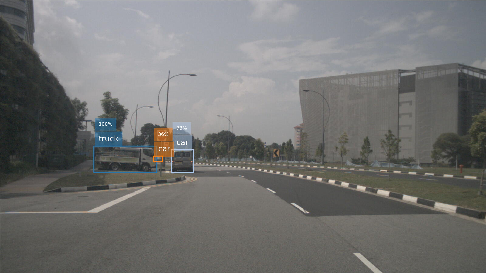

NuScenes 2D detection#
by Duncan Zauss, 10/08/2021
This is an extension to OpenPifPaf to make 2D detections with the objects from the NuScenes dataset.
Prediction#
We provide a pretrained checkpoint to predict the objects from NuScenes. The required checkpoint will be automatically downloaded if you provide “–checkpoint=shufflenetv2k16-nuscenes” as a CLI argument. Below an example prediction is shown.
%%bash
python -m openpifpaf.predict nuscenes/n013-2018-08-28-10-41-15+0800__CAM_FRONT__1535424448912407.jpg \
--checkpoint=shufflenetv2k16-nuscenes --image-output
INFO:__main__:neural network device: cpu (CUDA available: False, count: 0)
INFO:openpifpaf.predictor:neural network device: cpu (CUDA available: False, count: 0)
INFO:openpifpaf.decoder.cifdet:annotations 3, decoder = 23.7ms
INFO:openpifpaf.predictor:batch 0: nuscenes/n013-2018-08-28-10-41-15+0800__CAM_FRONT__1535424448912407.jpg
src/openpifpaf/csrc/src/cif_hr.cpp:102: UserInfo: resizing cifhr buffer
src/openpifpaf/csrc/src/occupancy.cpp:53: UserInfo: resizing occupancy buffer
IPython.display.Image('nuscenes/n013-2018-08-28-10-41-15+0800__CAM_FRONT__1535424448912407.jpg.predictions.jpeg')

Data download and preprocessing#
If you wish to train or evaluate a model, you will need create a NuScenes account and then download the NuScenes dataset from this link. Only the metadata and the sample images are required, there is no need to download the Sweep images (unannotated previous and following frames). Subsequently, you need to process the image annotations to MS COCO style annotations with this script.
Train#
Our model was trained with the following command:
python3 -m openpifpaf.train --dataset=nuscenes --lr=0.0001 --momentum=0.95 --b-scale=10.0 --clip-grad-value=10 --epochs=150 --lr-decay 120 140 --lr-decay-epochs=10 --batch-size=32 --weight-decay=1e-5 --nuscenes-upsample=2 --nuscenes-extended-scale --nuscenes-orientation-invariant=0.1 --basenet=shufflenetv2k16
Evaluation#
To evaluate your network you can use the following command:
python3 -m openpifpaf.eval --seed-threshold=0.3 --instance-threshold=0.3 --dataset=nuscenes --checkpoint=shufflenetv2k16-nuscenes